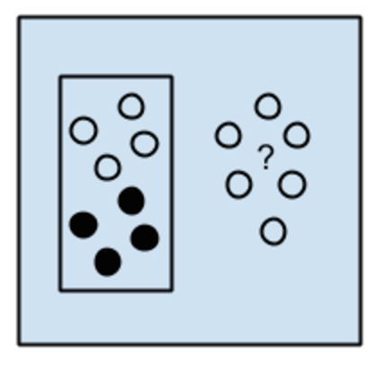
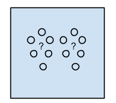
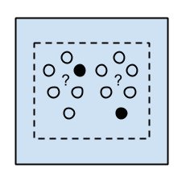
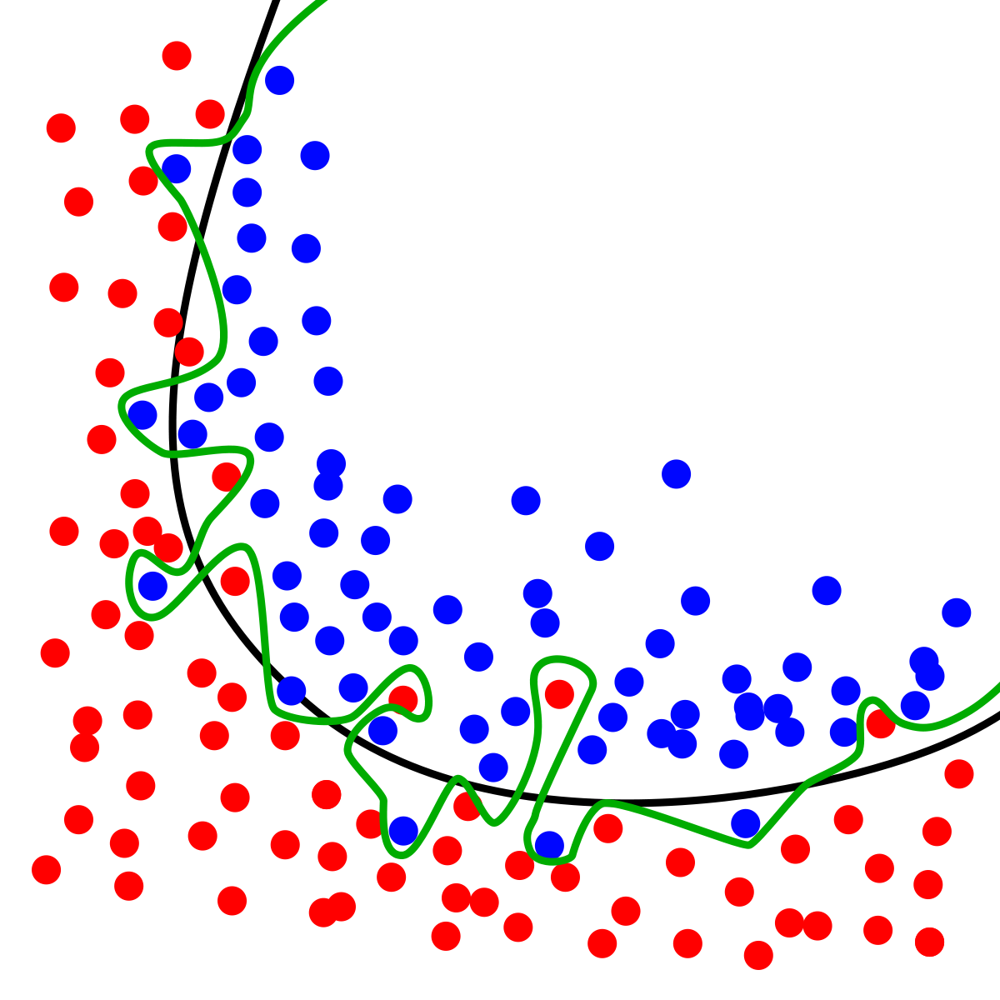

Learning Types
Machine learning methods can also be grouped by a learning type. Learning type refers to the presence and variety of label in the training data. The common learning types are listed:

Supervised Learning
Supervised learning methods are trained using labeled examples. For example, a piece of equipment could have data points labeled either “F” (failed) or “R” (runs). The learning algorithm receives a training set with the corresponding correct outputs, and the algorithm learns how to output ‘F’ or ‘R’ to match the training set. The idea is that the patterns it learned in the training set will also generalize to new examples.

Unsupervised Learning
Unsupervised learning is used for data that has no labels. The system is not told the "right answer" for any point. The algorithm discover or match patterns in the data itself. Unsupervised learning is very closely linked to pattern discovery, but the two are separate concepts. Unsupervised learning can be used for classification, and supervised learning can be used for pattern discovery.

Semi-Supervised Learning
Semi-supervised learning labels data to allow for supervised learning. Typically a small amount of labeled data is put through pattern discovery with a large amount of unlabeled data. This allows the unlabelled data to be assigned to a class, which is then trained on in a supervised way. Semi-supervised learning is useful when the cost associated with labeling is too high to allow for a fully labeled training process.

Reinforcement Learning
Reinforcement learning is often used for robotics, gaming and navigation. With reinforcement learning, the algorithm discovers through trial and error which actions yield the greatest rewards. This type of learning has three primary components: the agent (the learner or decision maker), the environment (everything the agent interacts with) and actions (what the agent can do). The objective is for the agent to choose actions that maximize the expected reward for an action or policy.

Overfitting is an essential concept in machine learning. Overfitting refers to the tendency of certain overly complex or sensitive models to learn the unique, accidental characteristics of the training data, as opposed to the underlying pattern that generated it. Because these functions have learned something other than the true pattern, their performance on the training data might not be repeated for data it has not been trained on yet. When a model has high training accuracy, but low testing accuracy, we say that model does not generalize well. Regularization is the term for techniques that constrain the model so that it will only learn the true patterns as opposed to random, dataset specific permutations. Many models and methods have been designed to generalize well, meaning that they learn simpler, more efficient functions that are likely to correspond to real patterns.